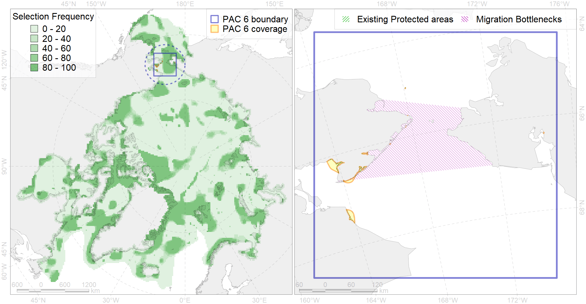

Region 6
Region 6
“ArcNet” scenario 33 achievement for region 6.
Use Accenter for advanced mode.

4
CFs inside of Region completely
54
CFs inside of Region at quarter
53
Complete-targets achievement by Region
83
Half-targets achievement by Region
| CF | Name | Target Achievement for Region | Proportion of Target Achievement in Region | Amount Proportion in Region |
|---|---|---|---|---|
| 7087 | I.3.1.1.2. Bering Strait Shelf valle | 191.2% | 100.0% | 100.0% |
| 3106 | polynya Bering NW | 833.3% | 100.0% | 100.0% |
| 7217 | East Chukotka kelp patches (27, 28) | 283.3% | 100.0% | 100.0% |
| 7230 | Kelp forests of St. Laurence I. | 333.3% | 100.0% | 100.0% |
| 7002 | Chirikov Basin benthic hotspot | 125.3% | 99.7% | 98.2% |
| 5111 | Killer whale summer feeding areas in Chukotka | 379.4% | 98.7% | 96.5% |
| 3107 | polynya Bering S | 759.3% | 99.1% | 92.5% |
| 5062 | Humpback whale summer feeding areas in the Pacific Arctic | 350.2% | 97.0% | 87.2% |
| 7229 | Kelp forests of Kolyuchinskaya Bay | 254.0% | 96.6% | 86.1% |
| 4012 | Feeding/nursery area of the Bering cisco (Coregonus laurettae), Asian populations (F17) | 257.0% | 96.1% | 85.3% |
| 7085 | I.3.1.1. Bering Strait | 489.8% | 96.0% | 83.2% |
| 5022 | Beluga of the Eastern Chukchi Sea winter distribution | 316.7% | 96.5% | 81.1% |
| 7086 | I.3.1.1.1. Bering Strait shelf | 448.3% | 95.4% | 81.1% |
| 6051 | Spectacled eider (Somateria fischeri) wintering grounds | 100.9% | 98.6% | 77.3% |
| 7001 | St. Lawrence Island Polynya benthic hotspot | 96.8% | 96.2% | 74.0% |
| 6001 | Least Auklet (Aethia pusilla) breeding colonies | 204.6% | 81.5% | 73.9% |
| 7003 | SE Chukchi Sea benthic hotspot | 95.2% | 94.9% | 73.5% |
| 7005 | Northern Anadyr Gulf benthic hotspot | 94.8% | 93.9% | 71.9% |
| 6014 | Spoon-billed sandpiper (Calidris pygmaea) breeding sites | 74.4% | 71.4% | 71.4% |
| 5052 | Gray whale summer feeding areas | 165.8% | 76.1% | 62.3% |
| 6016 | Long-tailed duck (Clangula hyemalis) East Asian moulting&migration stopovers | 124.4% | 91.3% | 60.3% |
| 6013 | Spoon-billed sandpiper (Calidris pygmaea) breeding grounds | 70.7% | 70.5% | 57.1% |
| 6081 | Thick-billed murre (Uria lomvia hecheri) breeding colonies | 99.5% | 56.3% | 53.8% |
| 3018 | Marginal Ice Zone distribution in April in the Chukchi Sea LME | 427.5% | 87.4% | 53.3% |
| 6088 | 6088 Aethipusillbreeding colonies | 207.9% | 70.2% | 52.9% |
| 5017 | Beluga of the Eastern Hudson Bay winter core distribution | 199.7% | 97.1% | 50.3% |
| 7011 | Core of the Beringian Province of the North Pacific zoogeographical region | 254.3% | 80.5% | 49.8% |
| 7078 | I.2.1.2. Lagoons | 105.8% | 95.8% | 46.9% |
| 5044 | Bowhead whale of the Bering-Chukchi-Beaufort population winter core distribution | 92.0% | 91.0% | 45.4% |
| 1016 | Pacific Walrus Feeding Area | 60.8% | 51.1% | 44.7% |
| 6079 | Thick-billed murre (Uria lomvia arrra) breeding colonies | 61.3% | 57.1% | 44.2% |
| 6048 | Black-legged kittiwake (Rissa tridactyla tridactyla) breeding colonies | 67.3% | 48.9% | 44.0% |
| 5043 | Bowhead whale of the Bering-Chukchi-Beaufort population autumn core distribution | 59.6% | 58.4% | 43.0% |
| 1017 | Pacific Walrus haulouts | 56.9% | 55.5% | 42.6% |
| 6030 | Glaucous gull (Larus hyperboreus pallidissimus) breeding grounds | 350.9% | 59.1% | 42.4% |
| 4091 | Fish zoogeography, Arctic Region, Subarctic Transitional-Pacific Province | 287.3% | 81.9% | 41.2% |
| 6085 | Horned puffin (Fratercula corniculata) breeding colonies | 108.8% | 49.2% | 39.5% |
| 8029 | Salt marshes of the Chukchi Sea LME | 121.5% | 91.4% | 37.7% |
| 6050 | Spectacled eider (Somateria fischeri) moulting grounds | 103.9% | 73.1% | 37.4% |
| 7092 | I.3.1.6. Anadyr Gulf shelf | 320.8% | 68.9% | 37.2% |
| 2058 | Bearded seal whelping areas in the Bering Sea as predicted by MIZ distribution | 148.0% | 52.6% | 36.2% |
| 6077 | Common murre (Uria aalge inornata) breeding colonies | 66.7% | 41.6% | 36.2% |
| 5110 | Bowhead whale of the Bering-Chukchi-Beaufort population winter distribution | 117.5% | 80.1% | 36.0% |
| 6102 | 6102 Uriaalge inornatbreeding colonies | 86.0% | 51.1% | 32.7% |
| 1015 | Pacific Walrus Breeding Area | 128.8% | 61.6% | 32.4% |
| 6067 | Common eider (Somateria mollissima v-nigrum) wintering grounds | 44.4% | 36.7% | 29.9% |
| 4005 | Spawning areas of the Pacific Capelin (Mallotus villosus catervarius) in Alaska (F11) | 163.3% | 42.9% | 29.7% |
| 1019 | Pacific Walrus Winter Distribution | 114.6% | 61.2% | 29.2% |
| 6105 | 6105 Urilomviheckeri breeding colonies | 79.9% | 39.4% | 29.2% |
| 3004 | Fast Ice distribution in the Chukchi Sea region | 455.4% | 68.5% | 28.5% |
| 1018 | Pacific Walrus Summer-Autumn Distribution | 112.0% | 47.9% | 28.4% |
| 6017 | Long-tailed duck (Clangula hyemalis) East Asian wintering grounds | 35.1% | 34.1% | 28.1% |
| 6103 | 6103 Urilomviarrrbreeding colonies | 53.7% | 40.4% | 27.1% |
| 9022 | polar bear denning areas of CS (Chukchi Sea) subpopulation | 41.3% | 40.4% | 27.1% |
| 6107 | 6107 Fratercula corniculata breeding colonies | 97.9% | 38.2% | 24.8% |
| 2040 | Ringed seal molting areas in the Bering Sea | 87.1% | 66.1% | 23.6% |
| 2006 | Bearded seal whelping areas in the Bering Sea | 91.0% | 51.5% | 23.1% |
| 6074 | King eider (Somateria spectabilis) Pacific winetring grounds | 47.7% | 32.9% | 22.9% |
| 2054 | Spotted seal foraging areas | 173.5% | 34.2% | 22.2% |
| 5002 | Beluga of Anadyr winter distribution | 36.3% | 35.6% | 21.5% |
| 6100 | 6100 Risstridactylpollicarius breeding colonies | 31.0% | 31.0% | 21.1% |
| 6073 | King eider (Somateria spectabilis) Pacific moulting&migration stopovers | 43.0% | 37.3% | 20.7% |
| 6087 | Red-legged kittiwake (Rissa brevirostris) wintering grounds | 93.6% | 43.0% | 20.3% |
| 9004 | polar bear of the CS (Chukchi Sea) subpopulation distribution | 58.3% | 50.3% | 20.1% |
| 7077 | I.2.1.1. Coastal domain | 69.8% | 64.8% | 19.8% |
| 2055 | Steller Sea Lion habitats of critical importance | 33.1% | 19.9% | 19.2% |
| 2043 | Ringed seal whelping areas in the Bering Sea | 73.6% | 42.3% | 19.0% |
| 6039 | Ivory gull (Pagophila eburnea) Pacific wintering grounds | 80.6% | 60.4% | 18.8% |
| 6011 | Brent goose (Branta bernicla nigricans) Asian breeding&moulting grounds | 101.8% | 37.5% | 18.5% |
| 4025 | Feeding/migration area of the Coho Salmon (Oncorhynchus kisutch) (F 25) | 260.2% | 27.8% | 16.8% |
| 4004 | Range of the Pacific Capelin (Mallotus villosus catervarius) (F11) | 508.3% | 37.1% | 16.3% |
| 2035 | Ribbon seal foraging areas in the Chukchi Sea | 125.4% | 34.7% | 16.3% |
| 4050 | Range of the Pollock (Theragra chalcogramma) (F 43) | 250.0% | 36.5% | 16.1% |
| 2045 | Ringed seal whelping areas in the Chukchi Sea | 60.8% | 34.5% | 15.7% |
| 4044 | Range of the Pacific cod (Gadus macrocephalus) (F 38) | 484.6% | 32.9% | 15.7% |
| 4026 | Feeding/migration area of the Chinook Salmon (Oncorhynchus tshawytscha) (F 26) | 242.4% | 26.4% | 15.5% |
| 4034 | Feeding area of the Taranetz’s Char (Salvelinus taranetzi) (F 31) | 45.7% | 27.2% | 15.5% |
| 2034 | Ribbon seal foraging areas in the Bering Sea | 230.8% | 37.4% | 14.8% |
| 7090 | I.3.1.4. Middle and outer shelf of eastern Bering Sea | 368.5% | 37.5% | 14.7% |
| 4023 | Feeding/migration area of the Pink Salmon (Oncorhynchus gorbuscha), native distribution (F23) | 225.7% | 34.0% | 14.5% |
| 7081 | I.2.1.5. Shelf valleys | 70.0% | 34.6% | 14.4% |
| 4042 | Range of the Saffron cod (Eleginus gracilis) (F 36) | 221.1% | 32.6% | 14.2% |
| 4033 | Feeding area of the Dolly Varden (Salvelinus malma) (F 30) | 112.9% | 23.2% | 14.0% |
| 6045 | Stellers eider (Polysticta stelleri) Pacific moulting&migration stopovers | 23.9% | 22.2% | 13.0% |
| 2032 | Northern Fur seal range | 168.2% | 32.1% | 12.9% |
| 5106 | Bowhead whale of the Bering-Chukchi-Beaufort population spring distribution | 19.8% | 19.5% | 12.3% |
| 7055 | cold corals of the Pacific | 23.8% | 20.1% | 12.0% |
| 2008 | Bearded seal whelping areas in the Chukchi Sea | 46.1% | 30.7% | 11.9% |
| 4070 | Local forms of the White-Sea herring (Clupea pallasii) (F8) | 44.7% | 25.2% | 11.5% |
| 4013 | Feeding/nursery area of the Bering cisco (Coregonus laurettae), Asian populations (F17) | 28.5% | 27.4% | 11.4% |
| 7080 | I.2.1.4. Shelf plains | 275.2% | 31.5% | 11.3% |
| 6078 | Common murre (Uria aalge inornata) wintering grounds | 55.1% | 35.0% | 10.6% |
| 6084 | Thick-billed murre (Uria lomvia) Pacific wintering grounds | 41.4% | 35.0% | 10.6% |
| 6066 | Common eider (Somateria mollissima v-nigrum) breeding&moulting grounds | 28.8% | 28.3% | 10.2% |
| 4006 | Feeding/nursery area of the Pacific rainbow smelt (Osmerus dentex) (F12) | 51.1% | 19.3% | 9.8% |
| 4018 | Feeding area of the Vendace, Least cisco (Coregonus sardinellа), Euro-Asian populations (F 20) | 38.8% | 20.4% | 9.7% |
| 4024 | Distribution of the Chum Salmon (Oncorhynchus keta) (F24) | 117.5% | 13.9% | 7.6% |
| 5105 | Bowhead whale of the Bering-Chukchi-Beaufort population autumn distribution | 21.5% | 16.9% | 6.8% |
| 4058 | Range of the Arctic flounder (Liopsetta glacialis) (F48) | 98.0% | 12.6% | 6.4% |
| 3104 | polynya Bering NE | 32.3% | 27.3% | 6.3% |
| 5019 | Beluga of the Eastern Bering Sea winter distribution | 10.2% | 10.1% | 6.0% |
| 4065 | Range of the Pacific Halibut (Reinhardtius hippoglossoides matsuurae) (F 50) | 180.7% | 18.6% | 6.0% |
| 4052 | Range of the Fourhorn Sculpin (Myoxocephalus quadricornis) (F 45), American populations | 181.1% | 12.5% | 5.7% |
| 5116 | 5116 Beluga EBeaufort Sea autumn core | 21.9% | 16.1% | 5.7% |
| 5117 | 5117 Beluga EChukchi Sea autumn core | 18.7% | 10.9% | 5.6% |
| 6027 | Glaucous gull (Larus hyperboreus barrovianus) breeding grounds | 43.2% | 13.4% | 5.2% |
| 7044 | Western Chukchi transitional zone | 36.1% | 15.7% | 5.0% |
| 2038 | Ringed seal foraging areas in the Chukchi Sea | 19.6% | 7.7% | 4.8% |
| 5047 | Fin whale summer feeding areas in the Bering Sea | 17.2% | 15.1% | 3.9% |
| 4022 | Feeding area of the Inconnu (Stenodus leucichthys nelma), American populations (F 22) | 8.6% | 5.2% | 3.6% |
| 5112 | Arctic Cetaceans (beluga, bowhead, narwhal) winter habitats as predicterd by MIZ | 7.3% | 6.0% | 3.1% |
| 4053 | Range of the Fourhorn Sculpin (Myoxocephalus quadricornis) (F 45), Euro-Asian populations | 96.2% | 5.7% | 3.0% |
| 2060 | Ribbon seal whelping areas as predicted by MIZ distribution | 21.0% | 7.2% | 2.6% |
| 3102 | polynya Chukotka | 14.8% | 2.8% | 2.1% |
| 4016 | Feeding area of the Broad whitefish (Coregonus nasus), Euro-Asian populations F 19 | 4.3% | 3.1% | 1.8% |
| 4021 | Feeding area of the Inconnu (Stenodus leucichthys nelma), Euro-Asian populations (F 22) | 5.2% | 4.4% | 1.8% |
| 4019 | Feeding area of the Vendace, Least cisco (Coregonus sardinellа), American populations (F 20) | 5.3% | 2.7% | 1.7% |
| 6010 | Brent goose (Branta bernicla nigricans) American breeding&moulting grounds | 6.1% | 4.3% | 1.5% |
| 3017 | Marginal Ice Zone distribution in April in the Eastern Bering Sea LME | 11.4% | 3.7% | 1.5% |
| 4041 | Range of the Polar Cod (Boreogadus saida) (F35) | 10.8% | 4.1% | 1.4% |
| 7091 | I.3.1.5. Shelf valleys of eastern Bering Sea | 4.3% | 4.1% | 1.1% |
| 4011 | Feeding area of the Lake whitefish (Coregonus clupeaformis) (F 16) | 1.7% | 1.6% | 0.8% |
| 4055 | Range of the Shorthorn Sculpin (Myoxocephalus scorpius) (F 46), American populations | 19.3% | 1.1% | 0.7% |
| 7233 | Kelp forests of north-eastern coast of Bering Sea | 3.2% | 1.2% | 0.7% |
| 4078 | Fish zoogeography, Arctic Region, High-Arctic Shelf Province, Wrangel – Beaufort District (10E) | 3.1% | 1.0% | 0.6% |
| 6015 | Black guillemot (Cepphus grylle mandti) breeding grounds | 4.3% | 0.9% | 0.5% |
| 4014 | Feeding area of the Siberian whitefish (Coregonus pidschian) (F 18) | 1.9% | 1.2% | 0.5% |
| 6106 | 6106 Urilomvilomvibreeding colonies | 0.6% | 0.5% | 0.4% |
| 3030 | Marginal Ice Zone distribution in July in the Chukchi Sea LME | 1.2% | 1.1% | 0.3% |
| 4084 | Fish zoogeography, Pacific Region, 6 - high-boreal and 7 - low-boreal districts of the Eastern North-Pacific subregion | 3.6% | 0.8% | 0.3% |
| 3108 | polynya Alaska | 1.0% | 0.2% | 0.2% |
| 2001 | Bearded seal foraging areas in the Chukchi Sea | 0.3% | 0.1% | 0.1% |